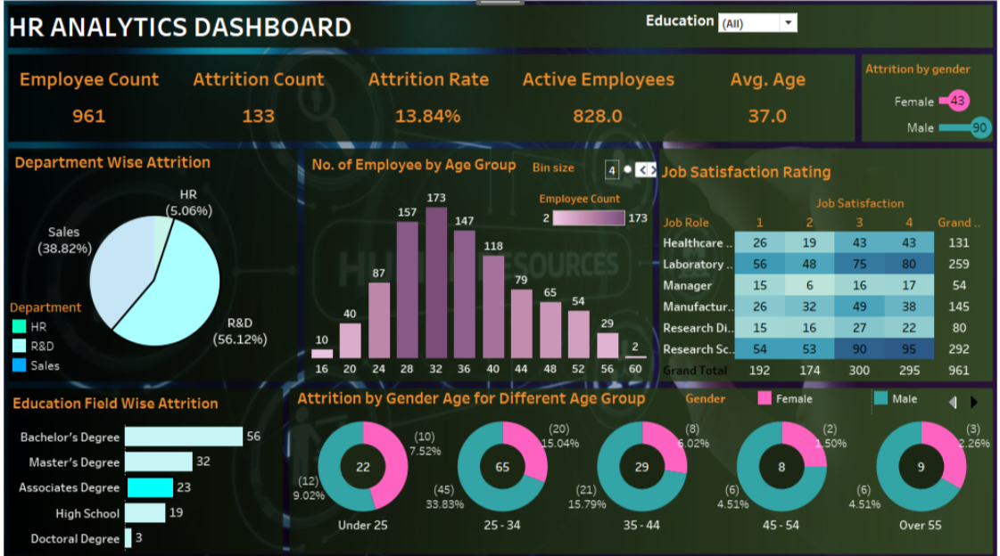

In this project, I developed and implemented SQL scripts to identify and rectify inconsistencies and inaccuracies within large datasets. This project enhanced data integrity and prepared the data for accurate analysis and reporting.


This project involved analyzing a COVID-19 dataset using SQL to identify key trends and insights. I performed detailed data queries to explore infection trends, recovery rates, and regional differences, contributing valuable information for public health analysis.

My Tableau dashboard showcases a range of visualizations that transform raw data into clear, actionable insights. With user-friendly features and dynamic charts, this dashboard enables efficient data exploration and decision-making.

In this project, I utilized Python libraries to analyze the relationships between various factors such as box office performance, ratings, and genre. This analysis provided insights into the key determinants of a movie's success.
Student Result Analysis using Python

This project involved using Python to examine student performance metrics. By analyzing data such as grades, attendance, and demographic information, I uncovered patterns and insights that contribute to a better understanding of student success factors.